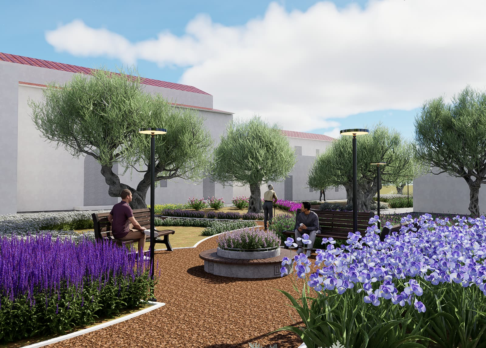

Bio-engineering
Slope stabilization, hydroseeding, geocells, and dry stone walling used as practical design tools rather than decorative afterthoughts.
Landscape Architect, Horticulturist, and CAD Specialist.
Designing resilient outdoor spaces that feel alive long after handover.
With more than two decades in landscape design and implementation, Outdoor Design develops nature-based interventions that solve site constraints while improving the long-term health of each environment.
Years Experience
Specialist

Engineering landscapes that stay useful, durable, and ecologically grounded.
Slope stabilization, hydroseeding, geocells, and dry stone walling used as practical design tools rather than decorative afterthoughts.
Drainage and irrigation systems planned to reduce waste, protect planting, and respond to each site’s actual water behavior.
Plant palettes, materials, and maintenance choices aligned to climate, comfort, and lasting visual clarity.
Photorealistic concepts and completed outdoor works.